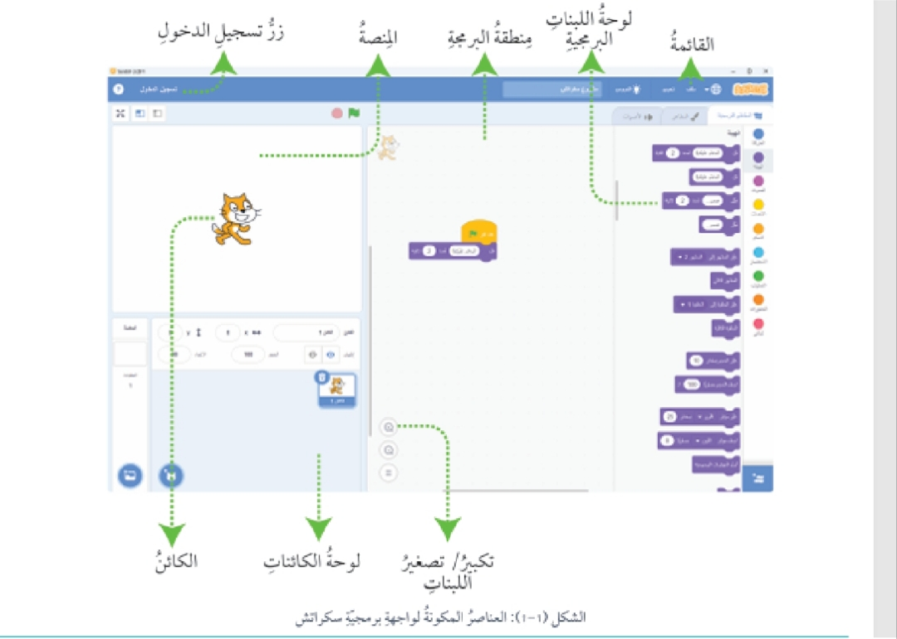
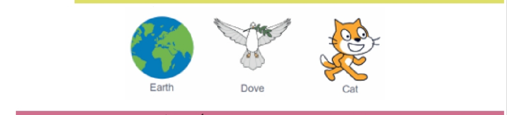
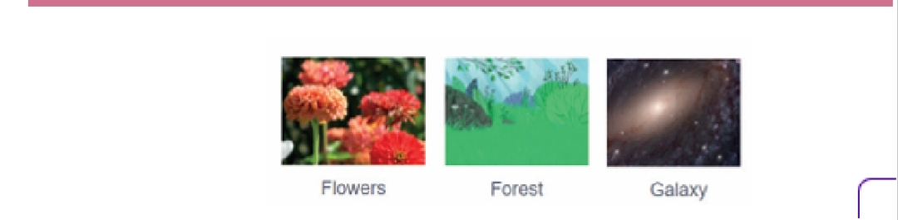
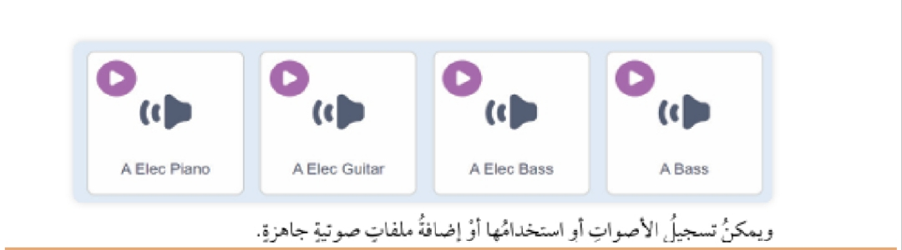
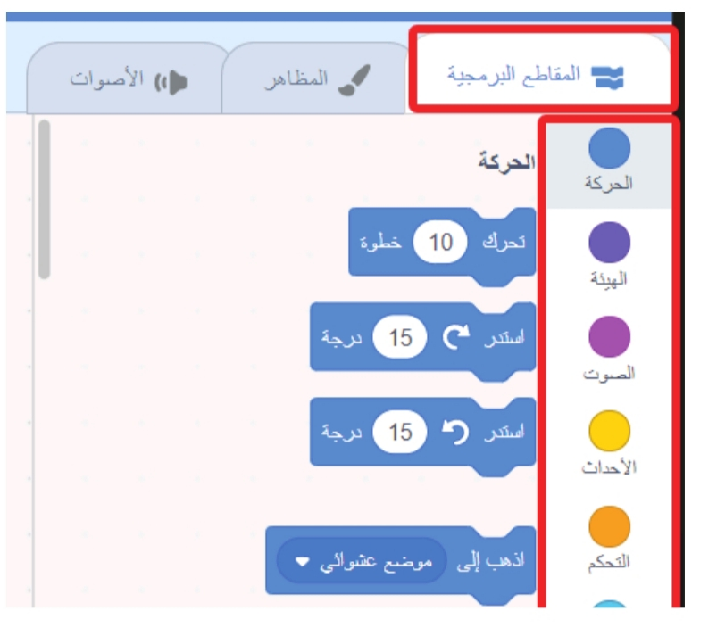

مقدمة الدرس
نستخدم برمجية Scratch كأداة لتحويل الأفكار إلى واقع. ✓
نشاط عملي
أفكر في أحد أنشطتي اليومية، مثل الاستيقاظ صباحًا، وإعداد وجبة خفيفة، أو الذهاب إلى المدرسة. أتعاون مع زملائي في مجموعتي لاختيار نشاط يومي مشترك بيننا، ثم نعمل معًا على كتابة تعليمات تفصيلية لتنفيذه، وكأننا نوجه جهازًا إلكترونيًا للقيام به. نحرص على أن تكون التعليمات واضحة ومرتبة ومقسمة إلى خطوات صغيرة (على سبيل المثال: الخطوة 1 أضبط المنبه للاستيقاظ، الخطوة 2 أوقف المنبه عند سماعه، الخطوة 3 أنهض من فراشي... إلخ).
بعد الانتهاء، أشارك مع مجموعتي النشاط الذي اخترناه وتعليمات تنفيذه مع بقية المجموعات.
نقوم معًا بمراجعة التعليمات للتأكد من وضوحها ودقتها، ونتأكد من عدم وجود خطوات مفقودة أو غير مفهومة.
النشاط: الاستيقاظ صباحًا والذهاب إلى المدرسة
الخطوات التفصيلية
- أضبط المنبه على الساعة المحددة للاستيقاظ.
- عند سماع صوت المنبه، أمد يدي لإيقافه.
- أنهض من السرير ببطء.
- أذهب إلى الحمام لغسل وجهي.
- أفرّش أسناني بمعجون وفرشاة الأسنان.
- أرتدي ملابس المدرسة المرتبة.
- أتناول وجبة الفطور (مثل كوب حليب وساندويش).
- أرتدي الحذاء وأتأكد من حقيبة المدرسة (الكتب، الأقلام، الدفاتر).
- أودع أفراد عائلتي.
- أخرج من البيت وأتوجه إلى المدرسة.
ماذا يحدث إذا نسينا خطوة؟
- إذا نسيت إيقاف المنبه ← سيظل يرن ويزعجني.
- إذا نسيت تنظيف أسناني ← سأذهب إلى المدرسة بدون عناية بالنظافة.
- إذا نسيت أخذ الحقيبة ← لن أستطيع متابعة دروسي.
- إذا نسيت ارتداء الحذاء ← لن أتمكن من الخروج بشكل صحيح.
إذن: نسيان خطوة واحدة ممكن يسبب مشكلة كبيرة أو يوقف تنفيذ باقي الخطوات.
كيف يشبه ذلك طريقة عمل الحاسوب والبرمجيات؟
الحاسوب يعمل وفق تعليمات دقيقة ومحددة. إذا حذفت أو نسيت سطرًا من البرنامج، قد يتوقف البرنامج عن العمل أو يعطي خطأ.
مثلًا لو كتبنا برنامجًا لحساب مجموع الأعداد ونسينا خطوة "جمع الرقم" - لن يخرج لنا النتيجة الصحيحة.
إذن الكمبيوتر مثلنا تمامًا، يحتاج كل خطوة مكتوبة بوضوح وبدون نسيان، وإلا سيتعطل التنفيذ.
الأوامر البرمجية والمبرمج
المهام الموكلة إلى المبرمج تشمل:
- تحليل المتطلبات.
- تصميم البرمجيات.
- كتابة الكود.
- اختبار البرامج.
- صيانة الأنظمة.
نشاط: ابحث
أستخدم متصفح الإنترنت وأبحث عن ثلاث لغات برمجية مختلفة ملخصًا أهم ميزاتها واستخداماتها، وأشارك ما أتوصل إليه من نتائج مع زملائي من خلال اللوح التفاعلي الرقمي (Canva).
بايثون (Python)
الميزات: سهلة وبسيطة، متعددة الاستخدامات، مكتبات كثيرة.
الاستخدامات: تحليل البيانات، الذكاء الاصطناعي، تطوير الويب، تعليم المبتدئين.
جافا سكريبت (JavaScript)
الميزات: تعمل مباشرة في المتصفح، تدعم التفاعل والوقت الحقيقي، لها أطر عمل قوية.
الاستخدامات: تصميم صفحات ويب تفاعلية، تطبيقات الويب (Frontend وBackend)، الألعاب البسيطة.
رست (Rust)
الميزات: أداء عالٍ مع أمان الذاكرة، نظام قوي للتزامن، أدوات تطوير ممتازة.
الاستخدامات: برمجيات الأنظمة، الأمن والتشفير، تطبيقات عالية الأداء، إنترنت الأشياء.
برمجية سكراتش Scratch
طرق استخدام برمجية سكراتش
يمكن استخدام برنامج سكراتش بطريقتين بسيطتين:
الطريقة الأولى: استخدام البرنامج المثبت على جهاز الحاسوب
يمكن فتح برمجية سكراتش المثبتة على جهاز الحاسوب - كما تعلمت في البرامج الأخرى - بتنفيذ الخطوات الآتية:
- أثبت برمجية سكراتش على جهاز الحاسوب من موقعها الرسمي.
- أبحث عن أيقونة برنامج Scratch على سطح المكتب، أو ضمن قائمة البرامج.
- أنقر على الأيقونة لتشغيل البرنامج.
الطريقة الثانية: تسجيل الدخول عبر الموقع الإلكتروني
يمكن استخدام برمجية سكراتش على السحابة من دون الحاجة إلى تنزيله على جهاز الحاسوب، وذلك بتنفيذ الخطوات الآتية:
- أفتح متصفح الإنترنت على جهازي https://scratch.mit.edu.
- أذهب إلى الرابط https://scratch.mit.edu. أو أبحث عن سكراتش عن طريق محرك البحث.
- أسجل الدخول باستخدام حسابي على موقع Scratch أو أنشئ حسابًا جديدًا إذا لم يكن لدي حساب مسبق.
الشاشة الرئيسة لبرمجية Scratch
تتكون الشاشة الرئيسة من المكونات الآتية:
- زر تسجيل الدخول (Login Button).
- القائمة (Menu).
- لوحة اللبنات البرمجية (Blocks Palette).
- منطقة البرمجة (Scripting Area).
- الكائن (Sprite).
- لوحة الكائنات (Sprites Pane).
- المنصة (Stage).
- تكبير تصغير اللبنات (Zoom Blocks).

زر تسجيل الدخول (Login Button)
القائمة (Menu)
- إنشاء مشروع جديد.
- فتح مشروع مخزن مسبقًا.
- حفظ المشروع الحالي.
- الوصول إلى دروس المساعدة.
- المزيد من الأدوات.
لوحة اللبنات البرمجية (Blocks Palette)
- الحركة (Motion).
- التحكم (Control).
- المظهر (Looks).
- الصوت (Sound).
منطقة البرمجة (Scripting Area)
الكائن (Sprite)
لوحة الكائنات (Sprites Pane)
المنصة (Stage)
تكبير تصغير اللبنات (Zoom Blocks)
المشروع في برمجية سكراتش
الألعاب
أنشطة ممتعة تتضمن تفاعل اللاعبين مع الشخصيات، والقواعد والنقاط، والمستويات.الرسوم المتحركة
قصص أو مشاهد متحركة تروي سردًا بصريًا باستخدام الكائنات والخلفيات.القصص التفاعلية
روايات تتغير وفقًا لقرارات المستخدم، حيث تسمح للمستخدمين باتخاذ قرارات تؤثر في اتجاه القصة وكيفية تطورها.مشروعات الفن
تصميم رسومات وأعمال فنية إبداعية باستخدام أدوات الرسم مع إمكانية التفاعل.مكونات مشروع سكراتش
يتكون مشروع سكراتش من:
- عناصر التصميم (Design Elements).
- عناصر البرمجة (Code Elements).
عناصر التصميم (Design Elements)
- الكائنات.
- الخلفيات.
- الأصوات.
الكائنات (Sprites)
الشخصيات أو العناصر التفاعلية في المشروع.
ومن الأمثلة عليها:

الخلفيات (Backdrops)
البيئة التي تدور فيها أحداث المشروع، حيث يمكن تصميم خلفيات مخصصة عبر تعديل الخلفيات الجاهزة، أو رسم خلفيات جديدة باستخدام أدوات الرسم في سكراتش أو تحميل خلفيات جاهزة، أو اختيار الخلفيات المدمجة بالبرمجية.

الأصوات (Sounds)
تعد الأصوات عنصرًا أساسيًا يمكن إضافته إلى المشروع في Scratch لتعزيز تجربة المستخدم، وجعل المشروعات أكثر تفاعلية وجاذبية، توفر البرمجية العديد من الأصوات ويمكن تسجيل الأصوات أو استخدامها أو إضافة ملفات صوتية جاهزة.
أمثلة على أصوات توفرها البرمجية:

ويمكن تسجيل الأصوات أو استخدامها أو إضافة ملفات صوتية جاهزة.
- تصميم خلفيات مخصصة عبر تعديل الخلفيات الجاهزة.
- رسم خلفيات جديدة باستخدام أدوات الرسم في سكراتش.
- تحميل خلفيات جاهزة.
- اختيار الخلفيات المدمجة بالبرمجية.
عناصر البرمجة (Code Elements)
تتضمن اللبنات البرمجية في Scratch أنواعًا متعددة، يؤدي كل منها دورًا محددًا داخل المشروع. ✓
الأنواع الأساسية من اللبنات تشمل:
- لبنات الحركة (Motion): للتحكم في حركة الكائنات.
- لبنات التحكم (Control): لتنظيم تسلسل الأحداث وتحديد الحلقات والقرارات الشرطية.
- لبنات الأحداث (Events): لبدء الأنشطة بناءً على أحداث معينة.
- لبنات المظاهر (Looks): لتعديل مظهر الكائنات والتفاعل البصري.

إنشاء مشروعات تفاعلية مبتكرة
استكشاف مشروعات الآخرين
نشاط جماعي
خصائص الاسم المناسب للمشروع
بالتعاون مع زملائي وزميلاتي، أناقش وأحدد خصائص الاسم المناسب لمشروع بناءً على ملحوظاتي للمشروعات المختلفة التي استكشفتها في النشاط السابق ومسمياتها وتصنيفاتها.
- قصير وواضح: يكون الاسم سهل القراءة والتذكر مثل "المتاهة السحرية".
- معبر عن الفكرة: يعكس محتوى المشروع أو هدفه (مثلاً: لعبة، قصة، تجربة علمية).
- جذاب ومشوق: يشجع الآخرين على تجربة المشروع أو استكشافه.
- مناسب للفئة المستهدفة: إذا كان للأطفال مثلاً، يكون بسيطًا وممتعًا، وإذا كان للتعلم يكون واضحًا وجادًا.
- خلوه من الغموض: ما يسبب لبس أو يبتعد عن موضوع المشروع.
- إبداعي ومبتكر: يميز المشروع عن باقي المشروعات المشابهة.
- متوافق مع اللغة المستخدمة: إذا كان المشروع بالعربية، يفضل أن يكون الاسم بالعربية أيضًا.